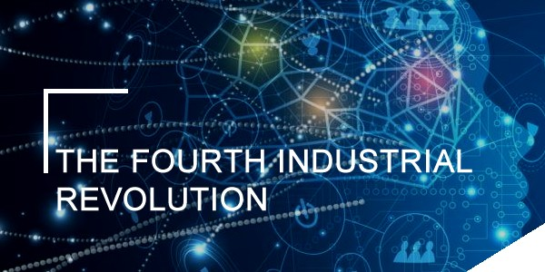

{{user.fullName}}

Which City?

{{city.description}}
A Foreign Language
{{foreignLanguage.language}}
| English | {{foreignLanguage.language}} |
|---|---|
| {{this.englishPhrase}} | {{this.foreignLanguage}} |
Favourite Subjects
Agile Rapid Knowledge Acquisition

Agile Acquisition” as “acquisition using agile or iterative development.” Agile or Iterative Development, with respect to software: means acquisition pursuant to a methodology for delivering multiple, rapid, incremental capabilities to the user for operational use, evaluation, and feedback.
Full Stack Web Development

It is process of developing both the frontend and backend of applications. Any application has a frontend (user-facing) component and a backend (database and logic) component. The frontend contains the user interface and code related to user interactions with the application.
4IR Advanced Bootcamp
The 4IR Bootcamp initiative is tailored specifically to align career choices and studies of individuals to growing industries, relatively new.